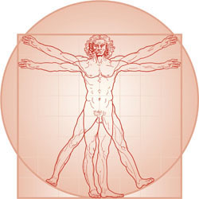

El desarrollo de la Personalidad Sistémica es un aspecto fundamental de la ética del Ingeniero de Sistemas. Este desarrollo se basa en la coherencia entre lo que sabe, piensa, dice y hace, asegurando que los principios sistémicos sean una parte integral y auténtica de su vida cotidiana, en el que la coherencia es crucial para mantener la credibilidad profesional y para demostrar la efectividad de los principios sistémicos a través de la propia experiencia personal.
1. Correspondencia entre Conocimiento, Pensamiento, Discurso y Acción
• Conocimiento y Pensamiento: El Ingeniero de Sistemas debe tener un profundo conocimiento de los principios sistémicos y estar constantemente reflexionando sobre cómo estos principios pueden aplicarse en diversas situaciones. Esta reflexión debe ser crítica y adaptativa, siempre buscando nuevas formas de mejorar la comprensión y la aplicación de estos principios.
• Discurso y Acción: Lo que el Ingeniero de Sistemas dice y hace debe reflejar fielmente lo que sabe y piensa. Esta congruencia asegura que sus acciones sean un testimonio vivo de los principios sistémicos, fomentando la confianza y el respeto de sus colegas y la comunidad en general.
2. Credibilidad Profesional
• Evidencia a través de la Experiencia Personal: La credibilidad del Ingeniero de Sistemas se sustenta en la evidencia de que los principios, metodologías y marcos que propone son utilizados por convicción en su propia vida. Esta evidencia se manifiesta en la forma en que aborda los problemas personales y profesionales, demostrando que sus propuestas no son meras teorías abstractas, sino prácticas efectivas y probadas.
• Ejemplo de Sistema Vivo: El Ingeniero de Sistemas debe ser un ejemplo de sistema vivo que aplica los principios sistémicos en su propia existencia. Esto incluye la auto-regulación, la adaptabilidad, la retroalimentación y la mejora continua. Al vivir de acuerdo con estos principios, puede demostrar su efectividad y servir de modelo para otros.
3. Escalando Niveles de Calidad de Existencia:
• Mejora Continua: En cada ciclo de vida, el Ingeniero de Sistemas debe esforzarse por alcanzar mejores niveles de calidad de existencia. Esto implica una evaluación constante de sus métodos y enfoques, aprendiendo de sus experiencias y ajustando sus prácticas para lograr un equilibrio óptimo entre sus objetivos personales y profesionales.
• Aplicación de Enfoques y Métodos: Los enfoques, principios y métodos sistémicos deben ser aplicados no solo en contextos profesionales, sino también en la vida personal del Ingeniero de Sistemas. Esta aplicación integral asegura una coherencia total entre sus roles y refuerza la validez de los principios sistémicos en diversos ámbitos de la vida.
4. Dimensiones del Desarrollo de la Personalidad Sistémica (CLEHES):
• Cuerpo: Mantener el cuerpo sano y en su mejor potencialidad, cuidar su presentación y expresión, y evaluar y decidir conscientemente sobre su ubicación y entorno.
• Lenguaje: Usar el lenguaje de manera efectiva y coherente, asegurando que las palabras reflejen verdaderamente los pensamientos y conocimientos.
• Emoción: Gestionar y expresar las emociones de manera saludable, reconociendo su impacto en la toma de decisiones y en las interacciones con los demás.
• Historia: Valorar la historia personal y profesional como un recurso de aprendizaje continuo, integrando las lecciones del pasado en las decisiones presentes.
• Eros: Mantener la pasión y la motivación por lo que se hace, asegurando que el trabajo sea una fuente de satisfacción y realización personal.
• Silencio: Reservar tiempo para la reflexión y la introspección, permitiendo una comprensión más profunda de uno mismo y del entorno.
